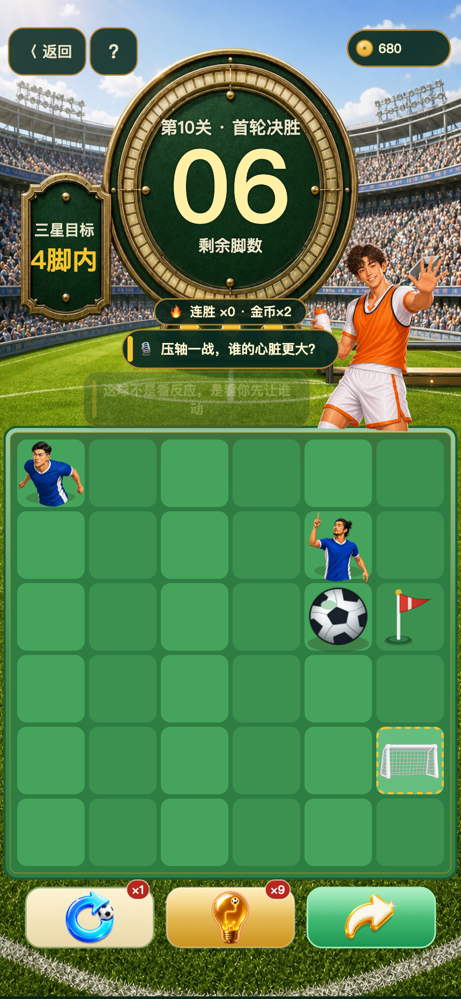
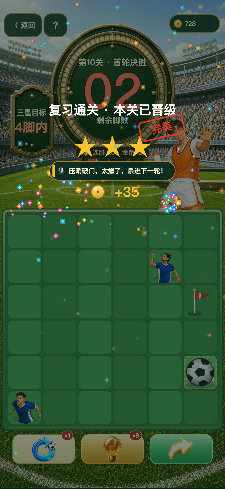
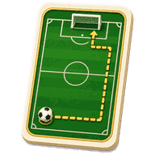

路线足球 · 三步破门挑战
先看路线，
先看路线，
再动这一脚。
足球会一滑到底。判断阻挡、利用落点，用标准路线 右 → 上 → 右 把球送进门。
- 6×6小场大判断
- 3 步本关标准解
- 500 关每关验证有解
热身赛 · 路线 01
三步送球入网
已用0步
 队友
队友 对手门将
对手门将按住足球向右拖，或使用方向键。
一场不断改写的赛季500 关，
500 关，
不是重复堆量。
基础动作只需一滑；随后每一批规则加入，都在改变你对路线、落点和先后手的判断。每关都由程序验证有解。
开场哨
基础移动
上下左右，一滑到底。边界和角色决定落点，先读场再动脚。
一关，三次判断真实关卡，不靠反应。
真实关卡，不靠反应。
看你先让谁动。
拖动下方进度，查看从读局、传递到三星晋级的完整过程。
01 · 先读局观察角色与球门，预判每次滑行的落点。



路线卡帮你看清下一步，保连卡留住赛场节奏。真正决定晋级的，仍是你对这片 6×6 球场的判断。

微信搜《一脚晋级》
打开微信，搜索游戏名称或扫描小程序码。
本地原型展示，发布前需微信实扫确认